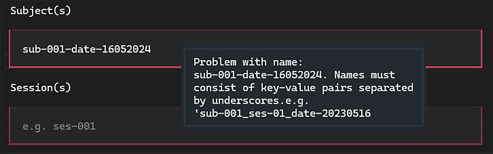
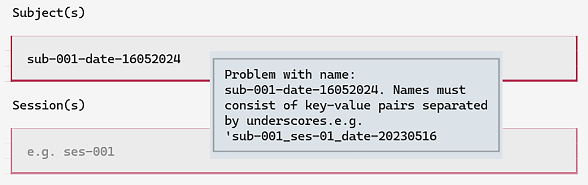

Managing neuroscience projects with datashuttle#
Create, validate and transfer standardised project folders

Maintaining a well-organised neuroscience project is hard.
Everyone can appreciate the benefits of a tidy project folder, but the practicalities of running an experiment often get in the way. Folder organisation is low on the priority list during acquisition sessions spent managing complex setups and experimental animals.
However, the cost of small mistakes during data acquisition can be high. One misplaced character may mean sessions are missed by analysis scripts or subject identifiers are duplicated. The best protection against such errors is automating the process through acquisition scripts—resulting in hours spent writing data-management code entirely unrelated to your central research goals.
In our previous blog post we highlighted the benefits of data standardisation for systems neuroscience, introducing the NeuroBlueprint specification. An immediate benefit of a widely-used standard is that the entire community can share tools for project management.
In this blog post we introduce datashuttle—a tool for the automated creation, validation and transfer of projects organised to the NeuroBlueprint standard. datashuttle aims to drop into existing acquisition pipelines, reducing errors associated with manual folder creation and removing the need to write your own data-management code.
Below we give a whistlestop tour of datashuttle and its key features.
How datashuttle is used in an experiment#
datashuttle runs on Windows, macOS or Linux and is easy to install through conda-forge or PyPI. datashuttle can be used from within Python code (using the Python API) or through a graphical interface that works in any system terminal.
Imagine you are starting a new experiment, during which you acquire both
behavioural (behav) and electrophysiological (ephys) data.
{kind=link}
{kind=link}
Typically, the initial step is to create the folders to store the data. datashuttle can be used to quickly create standardised project folders for this purpose, with live-validation to ensure no errors are introduced.
Once the data are collected, they are often moved to a central storage machine and integrated with previously collected data. datashuttle allows you to transfer project folders at the click of a button (graphical interface) or with a single function call (Python API).
Later on in the experiment, you may want to transfer only a subset of data from the central machine to a separate computer for analysis. For example, you may want to pilot an animal tracking pipeline, grabbing only the behavioural data for the first 5 subjects. datashuttle allows flexible custom transfers, meaning you don’t have to drag and drop these data manually or write a custom script.
datashuttle aims to drop into your existing acquisition pipelines whether they are manual or automated, and can be used in two ways:
The graphical user interface replaces manual folder creation and/or transfer, reducing the risk of errors
The Python API can be integrated into automated acquisition pipelines, removing the need to write your own data-management code
Below we will give an overview of datashuttle’s key folder creation and transfer features.
Creating folders with live-validation#
Creating folders through datashuttle’s graphical interface is as simple as
entering the subject and session names, selecting the datatype and clicking Create Folders
{kind=link}
{kind=link}
Live-validation of inputs as you type ensures formatting errors don’t creep into the project:
 {kind=link}
{kind=link}
There are a number of shortcuts to reduce the amount of manual typing.
For example, the tags (@DATE@, @TIME@, @DATETIME@) will
fill the created folder with the date / time / datetime. Double-clicking
an input will suggest the next subject or session.
A full list of such shortcuts are available in the
documentation.
Folders can be created in an equivalent way through the Python API:
from datashuttle import DataShuttle
project = DataShuttle("my_first_project")
created_folder_paths = project.create_folders(
"sub-001", "ses-001_@DATE@", ["behav", "funcimg"]
)
Data Transfer#
datashuttle allows you to transfer data between machines
at the click of a Transfer button.
The real power comes from customisable transfers. Let’s say that you wanted to transfer only the first behavioural session from all subjects to a machine for analysis.
In the graphical interface, you would fill in the Custom Transfer screen
as below and click Transfer:
{kind=link}
{kind=link}
The keyword all_sub will transfer any subject while the @*@ tag
in the session name acts as a wildcard. There are
many more options
for customised transfer available.
Transfers can also be run directly in code through the Python API:
from datashuttle import DataShuttle
project = DataShuttle("my_first_project")
project.transfer_custom(
"rawdata", "all_sub", "ses-001_@*@", "behav"
)
Logging#
A complete record of all file transfers is invaluable, ensuring the full history of the project can be checked at any time. Whenever datashuttle creates a folder or transfers some data, it logs all details to the local machine. Logs are stored on the filesystem and can be viewed in a text editor or through the graphical interface:


Getting started with datashuttle#
We have given a brief tour of datashuttle’s key features, but full details on getting started can be found on the website and Getting Started tutorial.
Standardisation is incredibly useful, but it should not come at the expense of convenience. datashuttle should make managing your project easier than it is now—if not, we want to hear how it can be improved. Please get in touch anytime through our GitHub Issues or Zulip Chat!